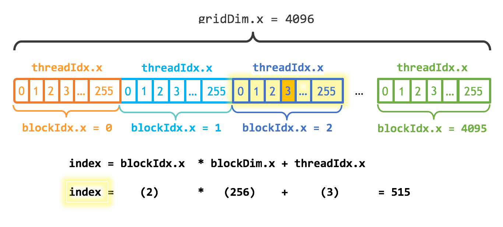

同一段加法程序，在CPU上要跑91.8ms，改用GPU并行并加上内存预取之后只要47.5微秒。整个过程从一段普通C++ 代码起步，每一步改动都用profiler验证效果。
先看一段最简单的C++ 程序：把两个各含一百万个元素的数组逐元素相加。
#include <iostream>
#include <math.h>
// function to add the elements of two arrays
void add(int n, float *x, float *y)
{
for (int i = 0; i < n; i++)
y[i] = x[i] + y[i];
}
int main(void)
{
int N = 1<<20; // 1M elements
float *x = new float[N];
float *y = new float[N];
// initialize x and y arrays on the host
for (int i = 0; i < N; i++) {
x[i] = 1.0f;
y[i] = 2.0f;
}
// Run kernel on 1M elements on the CPU
add(N, x, y);
// Check for errors (all values should be 3.0f)
float maxError = 0.0f;
for (int i = 0; i < N; i++)
maxError = fmax(maxError, fabs(y[i]-3.0f));
std::cout << "Max error: " << maxError << std::endl;
// Free memory
delete [] x;
delete [] y;
return 0;
}把上面的代码存成add.cpp，用C++ 编译器编译。Linux下用g++，Windows上可以用MSVC，WSL里同样可以用g++。
> g++ add.cpp -o add然后运行：
> ./add
Max error: 0.000000（在Windows上可以把可执行文件命名为add.exe，用 .\add运行。）
输出显示求和没有任何误差，程序随即退出。接下来要把这段计算放到GPU的众多核心上并行执行，第一步其实很简单。
先把add函数改造成GPU能运行的函数，在CUDA里称为kernel。做法是给函数加上 __global__ 修饰符，告诉CUDA C++ 编译器：这个函数运行在GPU上，并且可以被CPU代码调用。
// Kernel function to add the elements of two arrays
__global__
void add(int n, float *sum, float *x, float *y)
{
for (int i = 0; i < n; i++)
sum[i] = x[i] + y[i];
}这个 __global__ 函数就是CUDA kernel，运行在GPU上。跑在GPU上的代码通常称为设备代码，跑在CPU上的称为主机代码。
要在GPU上计算，得先分配GPU能访问的内存。CUDA的统一内存提供一块被系统中所有GPU与CPU共享的内存空间。调用cudaMallocManaged() 就能在统一内存里分配数据，返回的指针在主机代码和设备代码里都能访问；释放时把指针交给cudaFree() 即可。
改动就是把代码里的new换成cudaMallocManaged()，把delete [] 换成cudaFree。
// Allocate Unified Memory -- accessible from CPU or GPU
float *x, *y, *sum;
cudaMallocManaged(&x, N*sizeof(float));
cudaMallocManaged(&y, N*sizeof(float));
...
// Free memory
cudaFree(x);
cudaFree(y);接下来要把add() kernel放到GPU上执行。CUDA kernel的启动使用三尖括号语法<<< >>>，加在add的调用里、参数列表之前。
add<<<1, 1>>>(N, sum, x, y);就这么简单。尖括号里的内容稍后展开，现在只需要知道这一行启动了一个GPU线程来运行add()。
还有一件事：kernel启动不会阻塞发起调用的CPU线程，CPU必须在读取结果前等kernel结束，所以在最终做误差检查之前要调用cudaDeviceSynchronize()。
完整代码如下：
#include <iostream>
#include <math.h>
// Kernel function to add the elements of two arrays
__global__
void add(int n, float *x, float *y)
{
for (int i = 0; i < n; i++)
y[i] = x[i] + y[i];
}
int main(void)
{
int N = 1<<20;
float *x, *y;
// Allocate Unified Memory – accessible from CPU or GPU
cudaMallocManaged(&x, N*sizeof(float));
cudaMallocManaged(&y, N*sizeof(float));
// initialize x and y arrays on the host
for (int i = 0; i < N; i++) {
x[i] = 1.0f;
y[i] = 2.0f;
}
// Run kernel on 1M elements on the GPU
add<<<1, 1>>>(N, x, y);
// Wait for GPU to finish before accessing on host
cudaDeviceSynchronize();
// Check for errors (all values should be 3.0f)
float maxError = 0.0f;
for (int i = 0; i < N; i++) {
maxError = fmax(maxError, fabs(y[i]-3.0f));
}
std::cout << "Max error: " << maxError << std::endl;
// Free memory
cudaFree(x);
cudaFree(y);
return 0;
}CUDA源代码的文件扩展名是 .cu。把代码存成add.cu，用CUDA C++ 编译器nvcc编译。
> nvcc add.cu -o add_cuda
> ./add_cuda
Max error: 0.000000这只是第一步。按现在的写法，kernel只对一个线程是正确的，因为每个运行这个kernel的线程都会把整个数组算一遍；多个并行线程同时读写同一批位置，还会造成竞态。
在Windows上要注意，把Microsoft Visual Studio项目配置属性里的平台设为x64。
想知道kernel跑多久，可以用Nsight Systems的命令行工具nsys。直接敲nsys profile -t cuda --stats=true ./add_cuda也行，但输出啰嗦。这里只关心kernel的耗时，所以写了个包装脚本nsys_easy，只输出需要的信息，同时避免nsys在源码目录里留下中间文件。脚本放在GitHub上，下载后放进PATH或当前目录即可。
为适配网页宽度，下面的输出删掉了一部分统计项。
> nsys_easy ./add_cuda
Max error: 0
Generating '/tmp/nsys-report-bb25.qdstrm'
[1/1] [========================100%] nsys_easy.nsys-rep
Generated:
/home/nfs/mharris/src/even_easier/nsys_easy.nsys-rep
Generating SQLite file nsys_easy.sqlite from nsys_easy.nsys-rep
Processing 1259 events: [======================================100%]
Processing [nsys_easy.sqlite] with [cuda_gpu_sum.py]...
** CUDA GPU Summary (Kernels/MemOps) (cuda_gpu_sum):
Time (%) Total Time (ns) Instances Category Operation
-------- --------------- --------- ----------- --------------------------
98.5 75,403,544 1 CUDA_KERNEL add(int, float *, float *)
1.0 768,480 48 MEMORY_OPER [memcpy Unified H2D]
0.5 352,787 24 MEMORY_OPER [memcpy Unified D2D]这张CUDA GPU摘要表显示add只被调用了一次，在NVIDIA T4 GPU上耗时约75ms。接下来用并行把它变快。
一个线程的kernel跑通了，怎么并行？关键在<<<1, 1>>> 这个执行配置，用来说明这次启动要用多少个并行线程。配置有两个参数，先改第二个：一个线程块里的线程数。CUDA GPU以32的倍数划分线程块，256个线程是个合适的选择。
add<<<1, 256>>>(N, x, y);只改这一处，计算会被每个线程重复做一遍，而不是分摊到并行线程上。要改对，得动kernel。CUDA C++ 提供了让kernel获取当前线程下标的变量：threadIdx.x是线程在自己块内的下标，blockDim.x是块内线程数。把循环改成用并行线程按步长扫过数组：
__global__
void add(int n, float *x, float *y)
{
int index = threadIdx.x;
int stride = blockDim.x;
for (int i = index; i < n; i += stride)
y[i] = x[i] + y[i];
}add函数的变化很小：把index设为0、stride设为1，与第一版语义完全一致。
把文件存成add_block.cu，再用nsys_easy编译运行。下文只给出输出里相关的那一行。
Time (%) Time (ns) Instances Category Operation
-------- --------- --------- ----------- ----------------------
79.0 4,221,011 1 CUDA_KERNEL add(int, float *, float *)提速很明显，从75ms降到4ms。从1个线程变成256个线程，这个结果并不意外，继续往下压。
CUDA GPU的众多并行处理器被归入流多处理器，简称SM。每个SM可以同时运行多个线程块，一个线程块只能待在一个SM上。
以基于Turing架构的NVIDIA T4 GPU为例，40个SM、2560个CUDA核心，每个SM最多支持1024个活跃线程。要用满这些线程，就得用多个线程块启动kernel。
执行配置的第一个参数是线程块的数量。这些并行线程块合在一起称为网格。
要处理N个元素、每块256个线程，只需算出至少能提供N个线程的块数：用N除以块大小，注意N不是blockSize整数倍时要向上取整。
int blockSize = 256;
int numBlocks = (N + blockSize - 1) / blockSize;
add<<<numBlocks, blockSize>>>(N, x, y);
kernel代码也要改成覆盖整个网格。CUDA提供gridDim.x，保存网格中的块数；blockIdx.x保存当前线程块在网格中的下标。
图1展示了一维情况下用blockDim.x、gridDim.x和threadIdx.x为数组定位的方式。每个线程的下标由两部分相加：所在块在数组里的起始偏移，即块下标乘以块大小blockIdx.x * blockDim.x，再加上线程在块内的下标threadIdx.x。blockIdx.x * blockDim.x + threadIdx.x是CUDA里惯用的写法。
__global__
void add(int n, float *x, float *y)
{
int index = blockIdx.x * blockDim.x + threadIdx.x;
int stride = blockDim.x * gridDim.x;
for (int i = index; i < n; i += stride)
y[i] = x[i] + y[i];
}更新后的kernel还把stride设为网格中的线程总数，即blockDim.x * gridDim.x。CUDA kernel里这种循环通常叫网格步长循环。
把文件存成add_grid.cu，再用nsys_easy编译运行。
Time (%) Time (ns) Instances Category Operation
-------- --------- --------- ----------- ------------------------
79.6 4,514,384 1 CUDA_KERNEL add(int, float *, float *)结果有点意思：这次改动没有带来提速，甚至可能略慢。计算规模已经扩大到40倍，也就是全部SM的数量，总时间却没有下降，说明计算不是瓶颈。
瓶颈的线索藏在profiler的完整摘要表里：
Time (%) Time (ns) Instances Category Operation
-------- --------- --------- ----------- ----------------------
79.6 4,514,384 1 CUDA_KERNEL add(int, float *, float *)
14.2 807,245 64 MEMORY_OPER [CUDA memcpy Unified H2D]
6.2 353,201 24 MEMORY_OPER [CUDA memcpy Unified D2H]表里出现64次主机到设备（H2D）和24次设备到主机（D2H）的统一内存memcpy，代码里却没有任何显式的memcpy调用。CUDA的统一内存是虚拟内存：每个虚拟内存页可以驻留在系统中任意设备（GPU或CPU）的内存里，页按需迁移。程序先在CPU上用for循环初始化数组，再启动kernel让GPU读写数组；kernel运行时这些页还在CPU上，于是产生大量缺页，硬件在缺页时把页迁移到GPU内存。这就形成了内存瓶颈，也是没有提速的原因。
迁移昂贵的原因是缺页逐次发生，GPU线程要停下等待页迁移。既然知道kernel需要哪些内存，x和y两个数组，就可以用预取让数据在kernel需要之前待在GPU上。方法是在启动kernel前调用cudaMemPrefetchAsync()：
// Prefetch the x and y arrays to the GPU
cudaMemPrefetchAsync(x, N*sizeof(float), 0, 0);
cudaMemPrefetchAsync(y, N*sizeof(float), 0, 0);再跑一遍profiler，输出如下。kernel现在只要不到50微秒。
Time (%) Time (ns) Instances Category Operation
-------- --------- --------- ----------- ----------------------
63.2 690,043 4 MEMORY_OPER [CUDA memcpy Unified H2D]
32.4 353,647 24 MEMORY_OPER [CUDA memcpy Unified D2H]
4.4 47,520 1 CUDA_KERNEL add(int, float *, float *)一次性预取数组的所有页，比逐页缺页快得多。这个改动对所有版本的add程序都有效，三个版本都加上预取再跑一遍profiler，得到下面这张汇总表。
数据进入内存之后，从单块到多块的提速与GPU的SM数量成正比，也就是40倍。
GPU上能拿到很高的带宽。add kernel是典型的带宽受限负载，265 GB/s已经超过T4峰值带宽320GB/s的80%；而GPU同样擅长计算密集型任务，比如稠密矩阵线性代数、深度学习、图像与信号处理、物理仿真。
| 版本 | 耗时 | 相对单线程加速 | 带宽 |
|---|---|---|---|
| 单线程 | 91,811,206 ns | 1x | 137 MB/s |
| 单块（256线程） | 2,049,034 ns | 45x | 6 GB/s |
| 多块 | 47,520 ns | 1932x | 265 GB/s |
想继续练手，可以试试下面几项，也欢迎在评论区聊聊结果。
1 浏览CUDA Toolkit文档。还没装CUDA的话，先看Quick Start Guide和安装指南，再看Programming Guide与Best Practices Guide；官方还提供了针对不同架构的调优指南。
2 在kernel里试试printf()。打印部分或全部线程的threadIdx.x与blockIdx.x，它们是按顺序打印的吗？为什么？
3 在kernel里打印threadIdx.y、threadIdx.z或blockIdx.y，blockDim与gridDim同理。它们为什么存在？怎么让它们取到0以外的值，对dims是1以外的值？
想把CUDA C++ 用到自己的计算里，可以从下面这批入门文章接着读：
● How to Implement Performance Metrics in CUDA C++
● How to Query Device Properties and Handle Errors in CUDA C++
● How to Optimize Data Transfers in CUDA C++
● How to Overlap Data Transfers in CUDA C++
● How to Access Global Memory Efficiently in CUDA C++
● Using Shared Memory in CUDA C++
● An Efficient Matrix Transpose in CUDA C++
● Finite Difference Methods in CUDA C++, Part 1
● Finite Difference Methods in CUDA C++, Part 2
● Accelerated Ray Tracing in One Weekend with CUDA
还有一批与之对应的CUDA Fortran文章，从An Easy Introduction to CUDA Fortran开始。
NVIDIA Developer Blog上还有大量CUDA C++ 与GPU计算相关的内容，可以慢慢翻。
想看更多，NVIDIA DLI提供多门深入的CUDA编程课程：
● 刚入门的话可以看Getting Started with Accelerated Computing in Modern CUDA C++，其中提供专用GPU资源、更完整的编程环境、NVIDIA Nsight Systems可视化profiler、数十个交互练习、详细讲解、8小时以上的材料，以及DLI能力证书。
● Python开发者可以看Fundamentals of Accelerated Computing with CUDA Python。
● 更进阶的内容可以看NVIDIA DLI自主学习目录里的加速计算部分。
参考：https://developer.nvidia.com/blog/even-easier-introduction-cuda/